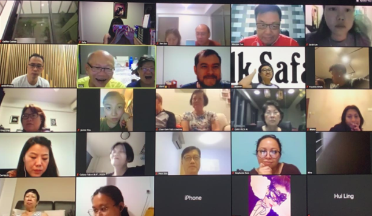
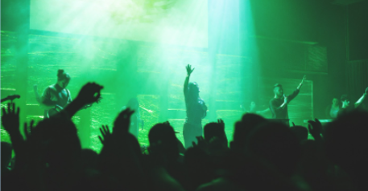

Be that God fearing community that shares the GOOD NEWS with all people, regardless of race & nationality
Mission
Create the community that collectively reproduces Worshippers of God & Disciples of Christ in others by first being a true Worshipper and Disciple of His Word ourselves and then, through our words & deeds in love, help others within
the community to do the same (2Tim2:2)

Our Key Ministries
Pastoral
Worship
Befrienders
Discipleship
New Encounter Worship Experience

Praise & Worship
A time of praising God through songs, hymns and prayers as a community
Personal Testimonies & His Word
A time to testify God's love, goodness, faithfulness and power in our lives through daily encounters with Him
Altar Call & Prayers
A time to respond to God's call and invite Him into your life and also a time to let all your requests be made known to Him through prayers
Testimonials
Ministering Worship
A worship that invites and draws an obedience response to His revealed nature, character, and His acts of grace & mercy.
Holy Spirit's Presence
A clear sense of being filled with all the fullness of God's love in our hearts, making our spirit rise up to say, "Abba, Father".
Authentic Sharing
Open & spontaneous sharing of fresh encounters of His love, His provisions, His grace and His mercies in daily events and activities.